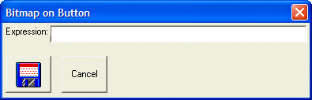

Putting Bitmaps on Buttons
You can put bitmaps on buttons by specifying a format string for the button. The syntax for the format string command is:
|
%I=image_name%. |
Image_name can be the name of an internal Alpha Five bitmap, such as '$A5_folder' (displays a file folder), or it can be the name of a bitmap you have added to the current database (Code tab on the Control Panel).
 Note : The image can
also be an image that you have temporarily loaded into memory from a disk
file. See " Using Images from External Files" in lesson 7.
Note : The image can
also be an image that you have temporarily loaded into memory from a disk
file. See " Using Images from External Files" in lesson 7.
For example, the following script produces a dialog with two buttons. The "Save" button is drawn with a bitmap on it. This button uses an internal Alpha Anywhere image called "bluefloppy".
|
result = ui_dlg_box("Bitmap on Button",<<%dlg% Expression:[.64expression]; <%I=bluefloppy%Save> %dlg%) |
This script produces the following dialog:

Lesson 13: Button with Bitmap
Clicking on the blue floppy causes the dialog to return the value 'Save' in the 'result' variable. Also, a_dlg_button is set to 'Save' when the blue floppy button is pressed.
 Note : In the above
example, we have not specified the optional event name in the button definition.
Therefore the button text ('Save') is used as the event name.
Because an image is specified, the button text is not displayed on button.
However, the button text is displayed in bubble help when the mouse is
over the button. The button could have been more fully specified (for
example) as: <%I=bluefloppy%Save!save_event>.
In this case, the event name is 'save_event', while the bubble help remains
'Save'.
Note : In the above
example, we have not specified the optional event name in the button definition.
Therefore the button text ('Save') is used as the event name.
Because an image is specified, the button text is not displayed on button.
However, the button text is displayed in bubble help when the mouse is
over the button. The button could have been more fully specified (for
example) as: <%I=bluefloppy%Save!save_event>.
In this case, the event name is 'save_event', while the bubble help remains
'Save'.
Next
Working with Images that Contain Multiple Sub-Images